Efi Pecani / the experiment collection
Ideas you can
get your hands on.
Fly a drone. Follow a learning agent. Look inside a language model experiment. A closer look at the things I build.
Working browser apps, real research artifacts, and small experiments that make the methods tangible.
Pick an experiment.
40 projects

Photo Studio
A photography workspace with 24 desktop effects, foreground segmentation, and a browser playground.
Iron Tide
A Silent Hunter–inspired Atlantic patrol: find the convoy, line up the shot, and escape the escort.
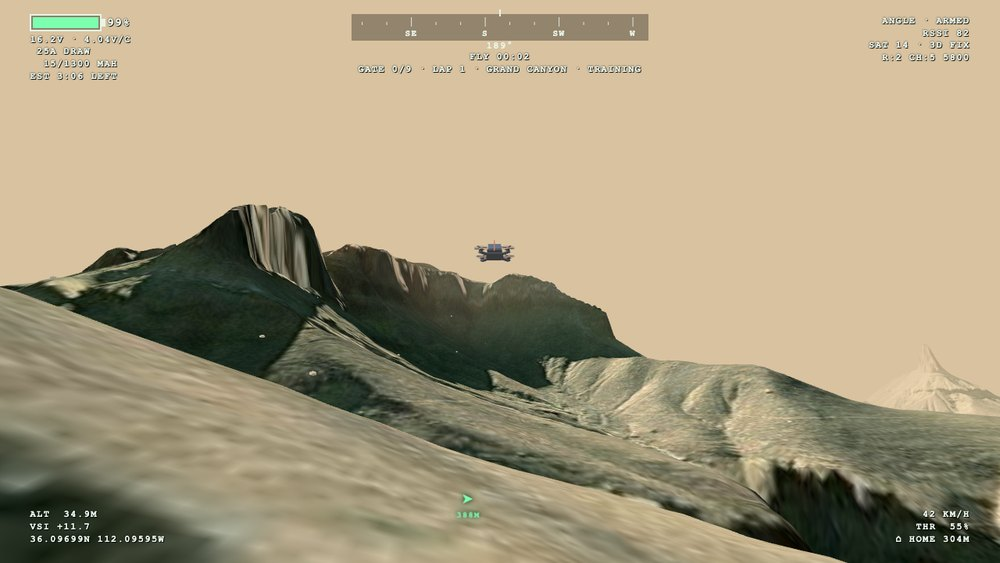
PROP//WASH
FPV drone flight over real satellite imagery and elevation, with race gates and a physics-driven battery model.
Empathy CAPTCHA
A satirical human-or-replicant interrogation, told through escalating CAPTCHA challenges and behavioral signals.
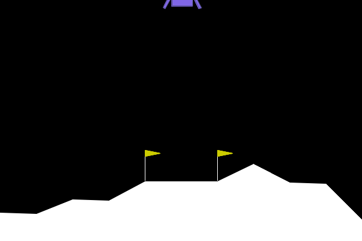
Learning to land
DQN and PPO agents learn controlled spacecraft landings in Gymnasium's LunarLander-v3.
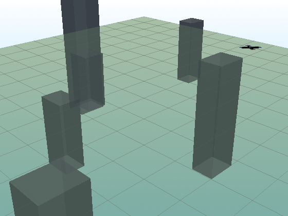
A drone learning to fly
A modular Gymnasium environment for quadrotor hover, waypoint tracking, obstacle navigation, and depth-camera perception.

Finding the way through
Curriculum-trained PPO and Dueling Double DQN navigate two-, four-, and six-room MiniGrid mazes.
Flappy Bird, trained
Q-learning and SARSA learn when to flap, then face narrower pipe gaps to test generalization.
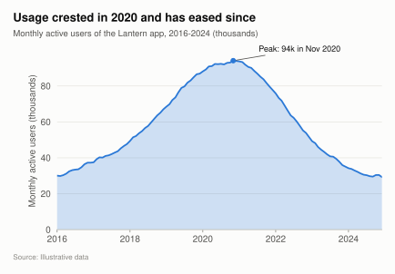
The right chart for the story
Explore 62 chart examples organized by the nine relationships in the Financial Times Visual Vocabulary.
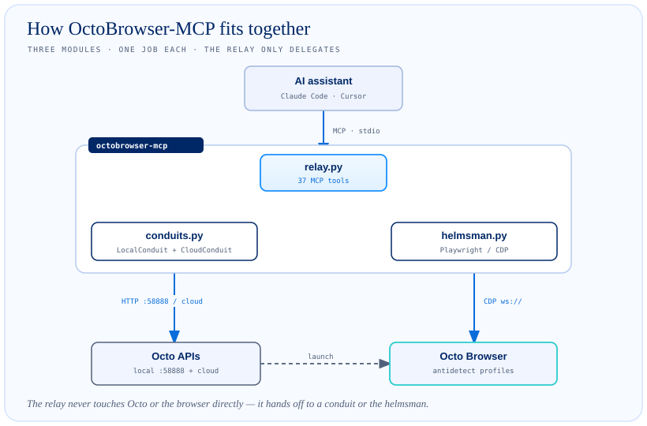
A browser tool belt
An unofficial MCP bridge for Octo Browser profile lifecycle management and Playwright/CDP automation.
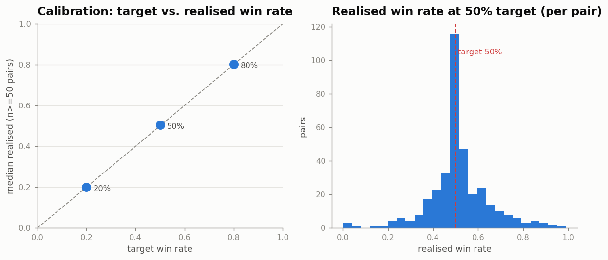
Inside the auction
A 249,000-impression real-time bidding analysis: click drivers, auction behavior, and calibrated win-rate pricing.
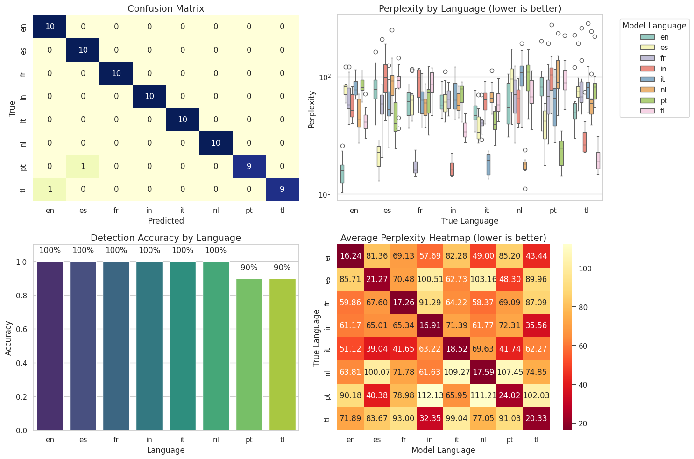
Which language is this?
Character n-grams and perplexity turn language identification into a question of which model is least surprised.
A small poetry machine
Second-order Markov transitions assemble new lines one word at a time, with the previous two words as context.
Find evidence before answering
Wikipedia question answering combines BM25 and QLD retrieval, BGE reranking, and few-shot generation.
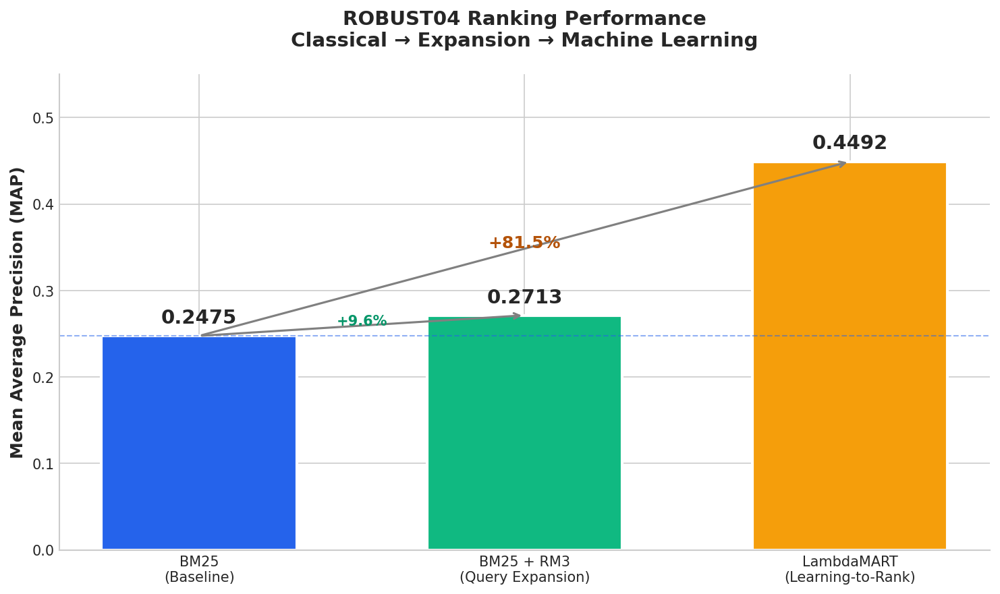
What deserves the top result?
BM25, RM3 expansion, and QLD plus BGE reranking compete on the ROBUST04 news collection.

Tiny memory, streaming signals
Five compact sketches monitor token-distribution changes as LLM output arrives.
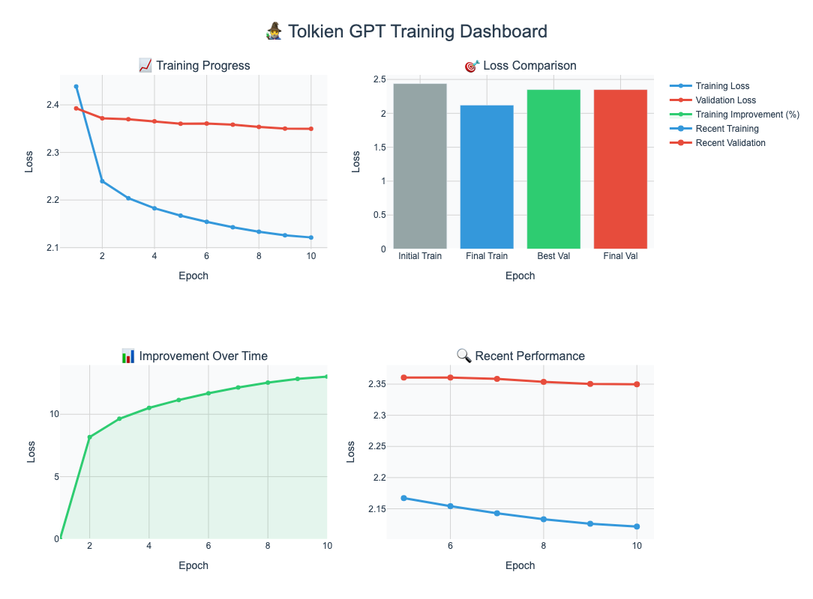
When training data changes the story
A literary model study separates style corruption from factual knowledge poisoning, using GPT-2 and Llama.
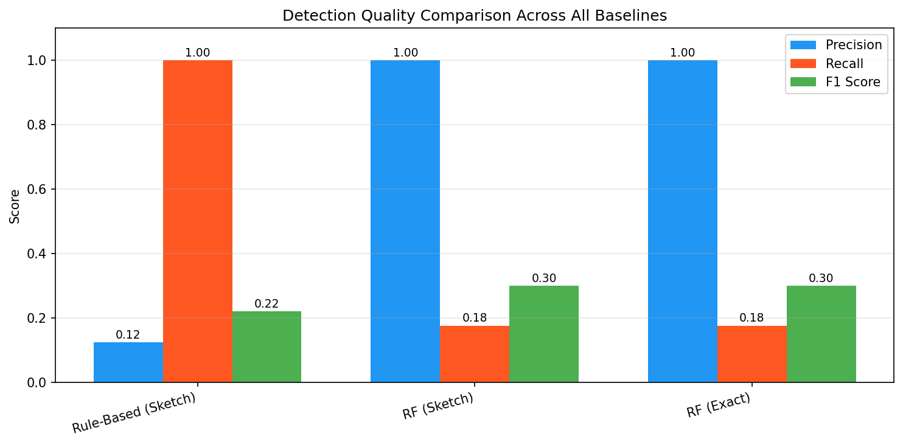
Detecting attacks in a stream
Probabilistic sketches compress network-flow windows before attack classification on UNSW-NB15.
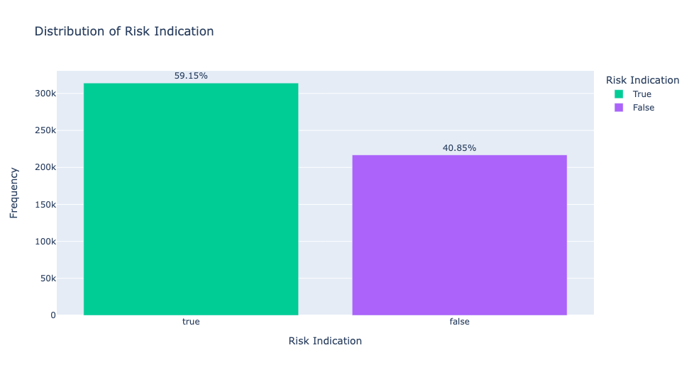
Finding automated login patterns
Analyze login velocity, tools, network types, and status codes to investigate credential stuffing.

A policy-aware email pipeline
Rule-based policy checks, TF-IDF topic analysis, and XGBoost explore data loss prevention in the Enron corpus.
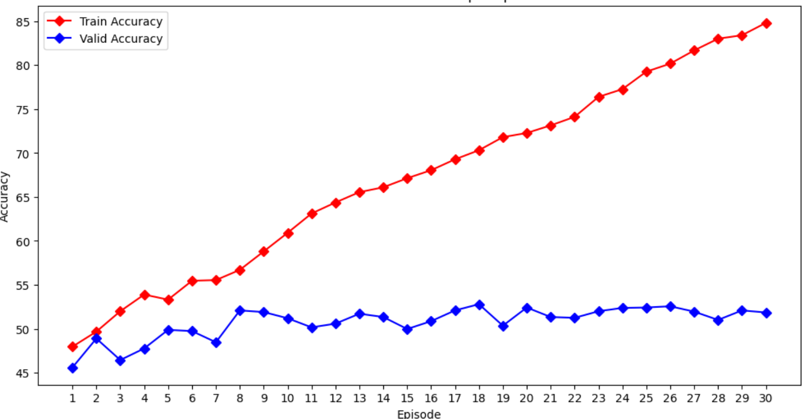
Images and words, together
Compare image and text branches, then test eight fusion strategies for harmful-meme classification.
Two routes to multimodal understanding
Compare OCR plus BLIP-2 captioning with a CLIP-based approach to harmful-content detection.
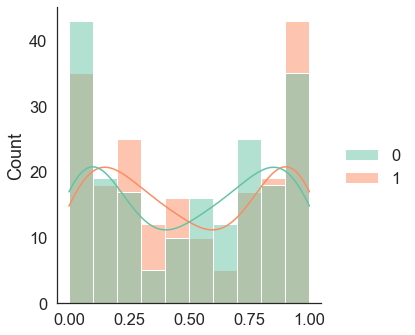
What did the diner mean?
Bag-of-Words features feed Random Forest and Naive Bayes classifiers for restaurant review sentiment.

The language of a crisis
Survey text explores Israeli entrepreneurs' sentiment during COVID-19, including simulated non-crisis responses.

When is a mobile user active?
Movement, geohashes, and daily activity form criteria for qualified monthly active users.
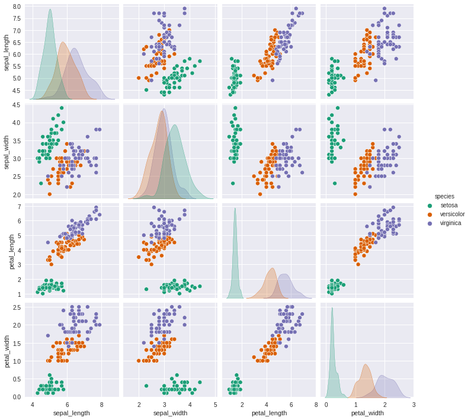
Drawing the separating margin
A compact SVM classification study from a machine-learning course, presented with its saved notebook figures.
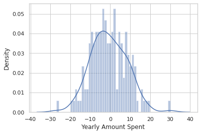
From browsing time to spending
Linear regression relates customer behavior on web and app channels to yearly spending.
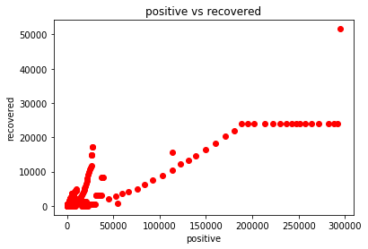
Grouping countries by response
A K-means exploration of COVID-19 data and country response patterns.
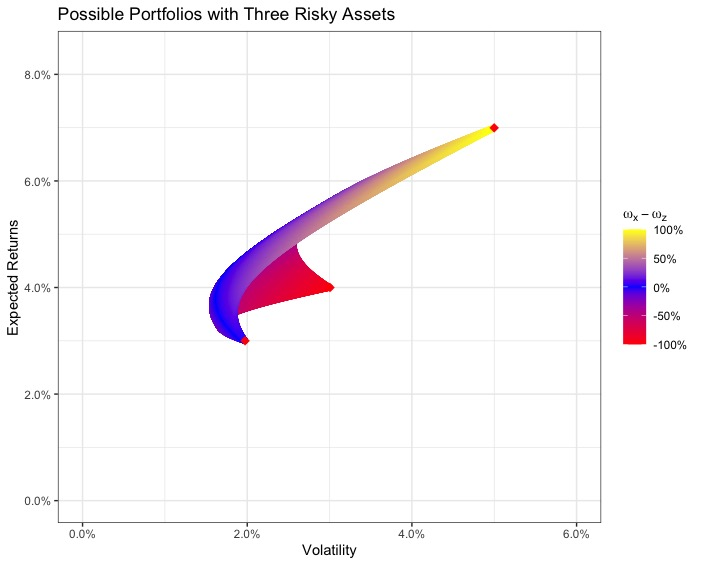
Three assets, many portfolios
An R experiment maps portfolio weights to expected return and volatility using a covariance matrix.
Learning from promotion data
A machine-learning study of employee promotion labels, with original charts and presentation material.
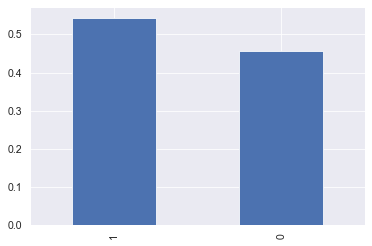
Evaluating a health classifier
A historical classification exercise using heart-disease dataset features and multiple machine-learning algorithms.

Reading the shape of an economy
R exercises explore GDP, interest rates, income distributions, and inequality using statistical data.
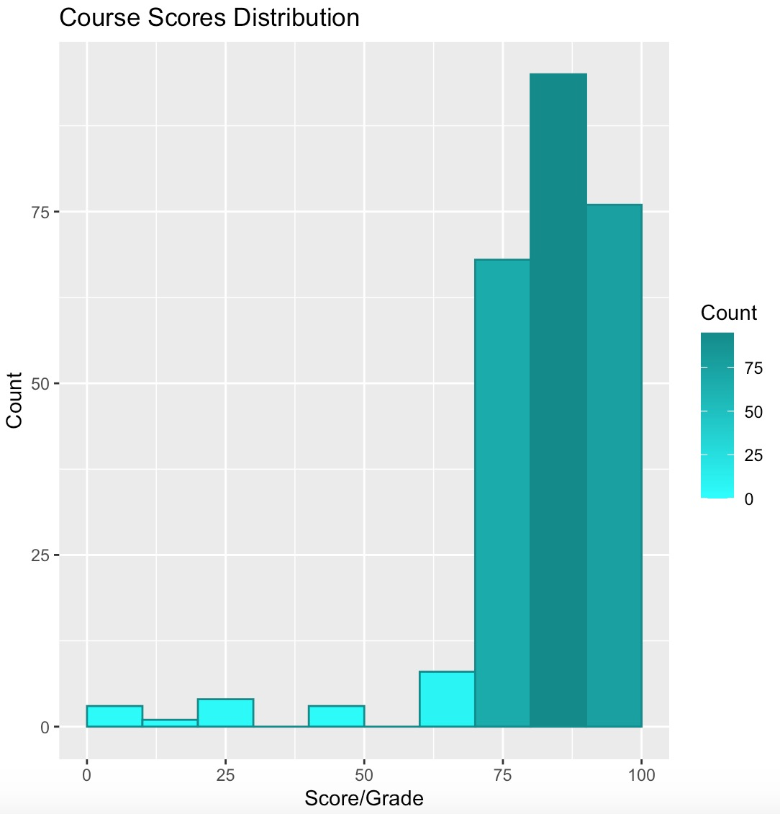
An R analysis for Trenario
An independently collected dataset becomes an R analysis with exploratory charts and a final report.
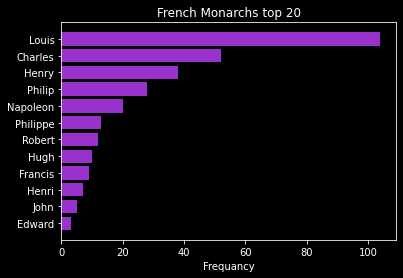
Names in the monarchy
NLP compares names and gender mentions in Wikipedia pages about French and Russian monarchies.
A word, counted
A small Python utility counts words per line and occurrences of Dorian in an input text file.
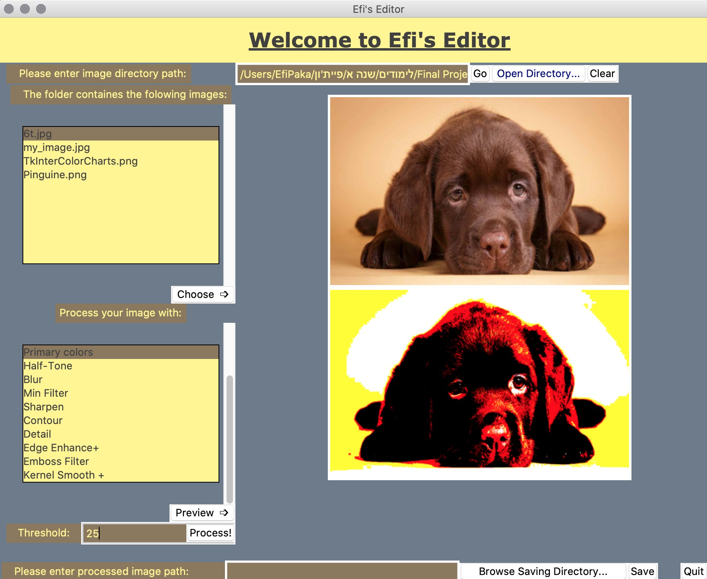
The original photo editor
The Python/Tkinter photo editor Efi wrote entirely by hand in 2018, preserved beside its modern successor.
The profile behind the projects
The GitHub profile README: a curated introduction to Efi's research, tools, and interactive experiments.
Fuzzer: an early web sketch
A small HTML repository with a welcome page and a separate fuzzer-named document.
A one-file web draft
A repository containing an HTML-like email-project draft inside README.md.
Query clustering: a reserved idea
A repository reserved for clustering user search queries, with no committed implementation to demonstrate yet.
No projects match. Try another word or category.